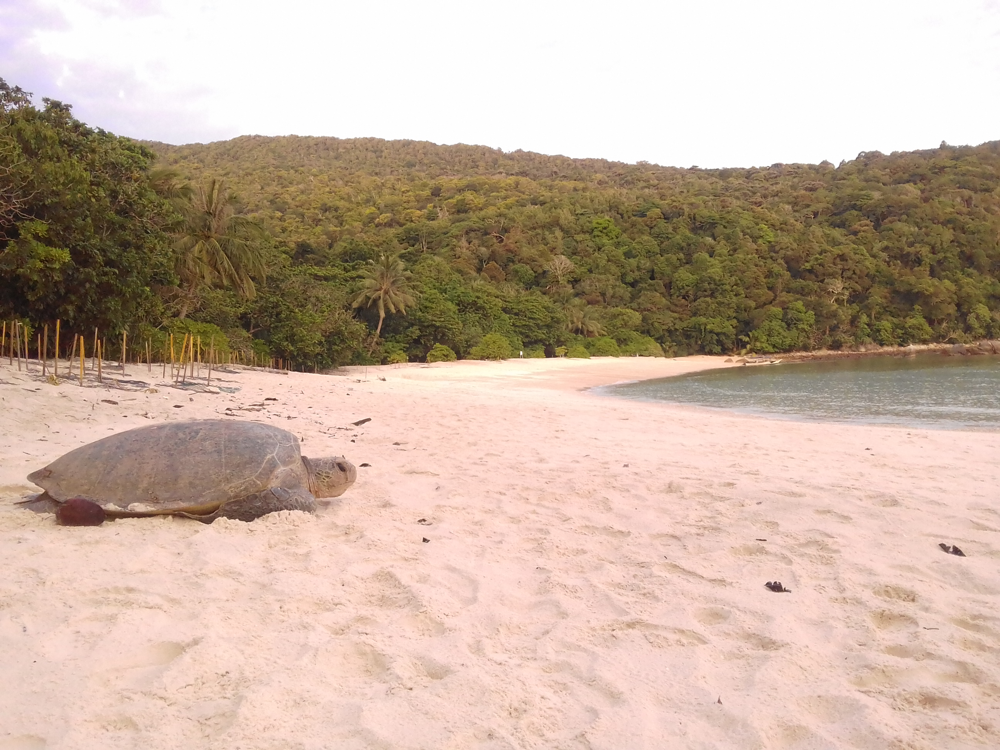
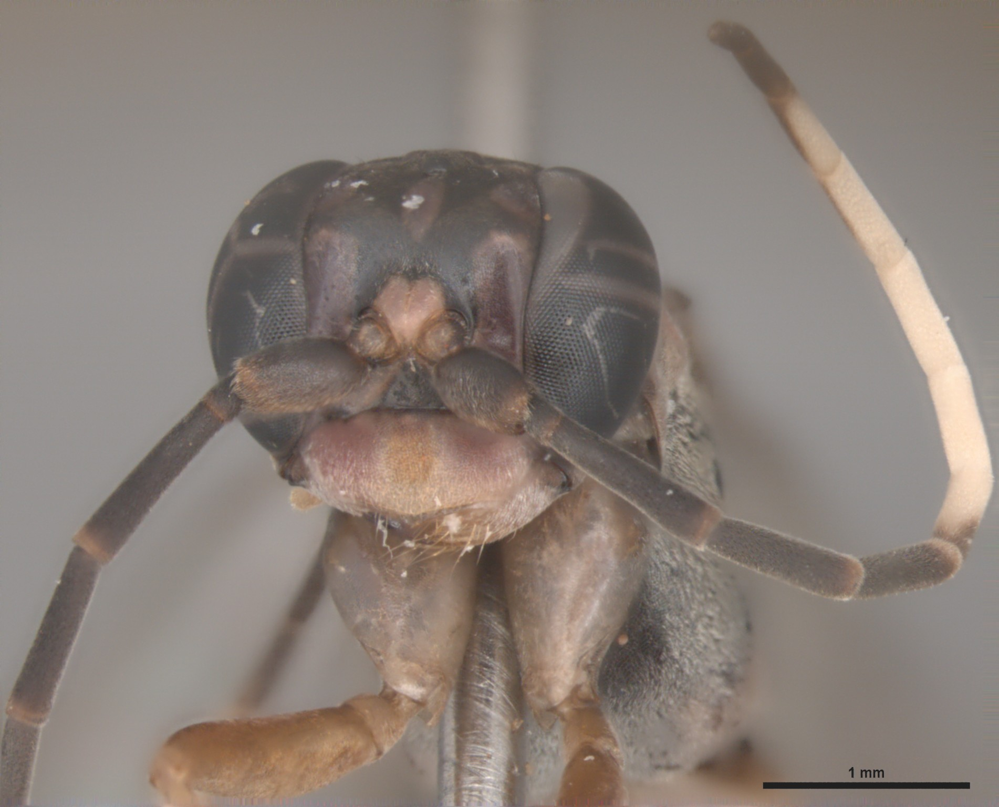
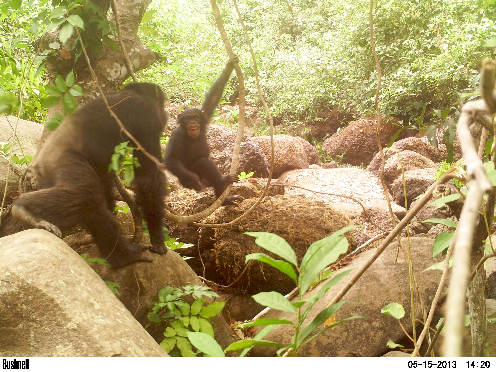

Efforts for the conservation of green turtles (Chelonia mydas) in Chagar Hutang Turtle Sanctuary (CHTS), Redang Island, Peninsular Malaysia, have been taking place for more than two decades. It has been proposed that recruitment of new mothers to that rookery has a significant influence on the recovery of nest abundance in a long term. Moreover, a 2-3 years’ quasi-periodic oscillation in nest abundance is also observed. This fluctuation may be a consequence of El Niño – Southern Oscillation (ENSO) teleconnections, which affect Sea Surface Temperature (SST) in South China Sea (SCS) in the months following El Niño/La Niña events with the same periodicity. Monthly fluctuations on nest abundance, by its turn, have a marked peak during the driest months of the year and may be influenced by East Asia Winter Monsoon (EAWM). For testing the hypothesis, a 24 years long data series of the number of clutches laid in CHTS was decomposed via Seasonal and Trend Decomposition by Loess (STL). The resulting long-term trend was correlated to yearly proportion of recruit mothers whilst the quasi-periodic fluctuations were correlated to the Oceanic Niño Index (ONI) and SST data series from the whole SCS and known foraging grounds of green turtles reproducing in CHTS. Monthly nest fluctuation was correlated to precipitation, atmospheric pressure and SST from the surroundings of CHTS. Long term trend of nests’ abundance was shown to be dependent on recruitment of new mothers, while 2-3 years’ quasi-periodic oscillation showed a negative correlation to ONI peaks with two-and-a-half years of delay but no correlation was found between monthly nest abundance and any of the EAWM proxies. These results highlight the importance of having conservation measures tackling the whole home range and life stages of sea turtles.

Hymenoptera is a megadiverse group; however, more than 80% of its species have yet to be described. This highlights the importance of studying new sampling techniques for this order. With this in mind, this study compared the efficiency of three types of passive traps for capturing Hymenoptera, with particular attention given to the less abundant families of Vespoidea—Pompilidae, Tiphiidae, Vespidae, Scoliidae, and Mutillidae. The survey was conducted in a fragment of semideciduous seasonal forest at the Regional Center for the Technological Development of Agribusiness of the Center-North, in the municipality of Pindorama, São Paulo State, Brazil. Three trapping methods were tested: Malaise traps (MT), pans containing a solution of water, alcohol, and propylene glycol (YPT), and ethanolic traps (ET). The traps remained in the field for four weeks in October 2014—the end of the dry season—and for another four weeks between March and April 2015—the end of the rainy season. A total of 5,013 individuals belonging to 39 Hymenoptera families were captured. Among the Vespoidea groups of interest, 228 individuals were collected, representing 44 morphospecies and 27 genera. The Malaise trap continued to be the most comprehensive technique for capturing Hymenoptera families and Vespoidea species and is therefore the most recommended method when more complete sampling is required. Yellow pan traps are recommended for sampling parasitoid families such as Diapriidae and Dryinidae, as well as female Mutillidae and Pompilidae. Ethanolic traps, in turn, proved effective in capturing social wasps of the species Synoeca surinama and Polybia jurinei. In addition, three genera of Pompilidae — Agenioideus, Aporus, and Balboana — and three species of Vespidae — Pachymenes consuetus, P. difficilis, and Zetus strigosus — are recorded for the first time in northwestern São Paulo State.

Guinea-Bissau is one of the ten poorest countries in the world. The Boé sector, in the southeast, is by its turn the poorest region of the country, with low availability of fertile soils but with high potential for bauxite mining. The sector is also home of western chimpanzee (Pan troglodytes verus) populations, which have been tolerating quite well the human presence in low densities. However, the arrival of mining enterprises may cause local extinction of some of these populations. The objective of this study was to discover the density and distribution of a western chimpanzee population living next to a bauxite deposit in the southeast of Boé, on the border with Guinea. With this information, a better picture of the possible impacts of mining over this chimpanzee population could be drawn. Two approaches were applied: Line Transect Sampling (LTS) was used as a tool to estimate density and environmental distribution as a function of chimpanzee nests, while Camera Trapping (CT) was used to identify behavior and associated fauna and to confirm the results from LTS. Additionally, satellite image classification was conducted to identify all suitable habitats and the effectively occupied area. From the LTS survey, a density of 1.80 weaned chimpanzees per km2 was estimated, while satellite image analyses identified 22 km2 of suitable habitat, leading to a final estimation of approximately 39 weaned chimpanzees living around the bauxite deposit. This estimate was consistent with the minimum of 18 individuals identified by CT. Drumming, a new behavior unique to the chimpanzees of this region, could also be documented by CT and is described here as well. It is concluded that indirect impacts of mining are more likely to influence chimpanzee survivorship than direct impacts; specifically, water pollution and noise disturbance may be the main factors affecting their environment rather than habitat destruction itself, since little overlap was found between their home range and the mining site. With these findings, suggestions can be made to mitigate the potential impacts of mining and to propose alternatives that couple environmental conservation with socio-economic development for the whole Boé sector.